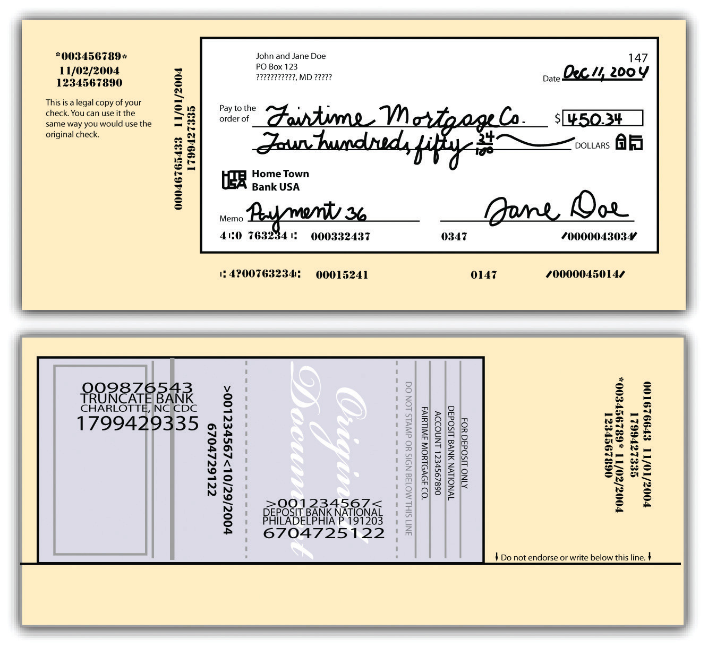

Once people mostly paid for things with cash: actual bills. That is obviously not very convenient or safe: a lost ten-dollar bill is almost certainly gone, and carrying around large quantities of cash is dangerous (probably only crooks do much of that). Today a person might go for weeks without reaching for a bill (except maybe to get change for coins to put in the parking meter). And while it is indisputable that electronic payment is replacing paper payment, the latter is still very significant. Here is an excerpt from a Federal Reserve Report on the issue:
In 2008, U.S. consumers had more payment instruments to choose from than ever before: four types of paper instruments—cash, check, money order, and travelers checks; three types of payment cards—debit, credit, and prepaid; and two electronic instruments—online banking bill payment (OBBP) and electronic bank account deductions (EBAD) using their bank account numbers. The average consumer had 5.1 of the nine instruments in 2008, and used 4.2 instruments in a typical month. Consumers made 52.9 percent of their monthly payments with a payment card. More consumers now have debit cards than credit cards (80.2 percent versus 78.3 percent), and consumers use debit cards more often than cash, credit cards, or checks individually. However, paper instruments are still popular and account for 36.5 percent of consumer payments. Most consumers have used newer electronic payments at some point, but these only account for 9.7 percent of consumer payments. Security and ease of use are the characteristics of payment instruments that consumers rate as most important.Kevin Foster, et al., The 2008 Survey of Consumer Payment Choice, Federal Reserve Bank of Boston, Public Policy Discussion Paper No. 09-10, p. 2 (April 2010), http://www.bos.frb.org/economic/ppdp/2009/ppdp0910.pdf.
Americans still wrote some thirty billion checks in 2006.Scott Schuh, Overview of the Survey of Consumer Payment Choice (SCPC) Program, Federal Reserve Bank of Boston, p. 5 (May 2010). http://www.bos.frb.org/economic/cprc/presentations/2010/Schuh050610.pdf. You can readily imagine how complex the bank collection process must be to cope with such a flood of paper. Every check written must eventually come back to the bank on which it is drawn, after first having been sent to the landlord, say, to pay rent, then to the landlord’s bank, and from there through a series of intermediate banks and collection centers.
To trace the traditional check-collection process, it is necessary to understand the terminology used. The bank upon which a check is written is the payor bankThe bank upon which a check is drawn; the drawee. (the drawee bank). The depository bankThe bank into which a check is deposited by its payee. is the one the payee deposits the check into. Two terms are used to describe the various banks that may handle the check after it is written: collecting banks and intermediary banks. All banks that handle the check—except the payor bank—are collecting banksA bank that collects the amount of a check for its customer from the payor bank. (including the depository bank); intermediary banksA bank that handles checks, but not including payor and depository banks. are all the collecting banks except the payor and depository banks. A bank can take on more than one role: Roger in Seattle writes a check on his account at Seattle Bank and mails it to Julia in Los Angeles in payment for merchandise; Julia deposits it in her account at Bank of L.A. Bank of L.A. is a depository bank and a collecting bank. Any other bank through which the check travels (except the two banks already mentioned) is an intermediary bank.
If the depository bank is also the payor bank (about 30% of all checks), the check is called an “on-us” item and UCC 4-215(e)(2) provides that—if the check is not dishonored—it is available by the payee “at the opening of the bank’s second banking day following receipt of the item.” Roger writes a check to Matthew, both of whom have accounts at Seattle Bank; Matthew deposits the check on Monday. On Wednesday the check is good for Matthew (he may have been given “provisional credit” before then, as discussed below, the bank could subtract the money from his account if Roger didn’t have enough to cover the check).
Roger in Seattle writes a check on Seattle Bank payable to Julia in L.A. Julia deposits it in her account at L.A. Bank, the depository bank. L.A. Bank must somehow present the check to Seattle Bank either directly or through intermediary banks. If the collecting banks (again, all of them except Seattle Bank) act before the midnight deadline following receipt, they have acted “seasonably” according to UCC 4-202. When the payor bank—Seattle Bank—gets the check it must pay it, unless the check is dishonored or returned (UCC 4-302).
The physical movement of checks—such as it still occurs—is handled by three possible systems.
The Federal Reserve System’s regional branches process checks for banks holding accounts with them. The Feds charge for the service, and prior to 2004 it regularly included check collection, air transportation of checks to the Reserve Bank (hired out to private contractors) and ground transportation delivery of checks to paying banks. Reserve Banks handle about 27 percent of US checks, but the air service is decreasing with “Check 21,” a federal law discussed below, that allows electronic transmission of checks.
Correspondent banksThose banks that form a partnership to exchange checks among themselves, bypassing the Federal Reserve and its fees. are banks that have formed “partnerships” with other banks in order to exchange checks and payments directly, bypassing the Federal Reserve and its fees. Outside banks may go through a correspondent bank to exchange checks and payments with one of its partners.
Correspondent banks may also form a clearinghouse corporationAn office where banks exchange checks and drafts and settle accounts, owned by the member banks participating., in which members exchange checks and payments in bulk, instead of on a check-by-check basis, which can be inefficient considering that each bank might receive thousands of checks in a day. The clearinghouse banks save up the checks drawn on other members and exchange them on a daily basis. The net payments for these checks are often settled through Fedwire, a Federal Reserve Board electronic funds transfer (EFT) system that handles large-scale check settlement among US banks. Correspondent banks and clearinghouse corporations make up the private sector of check clearing, and together they handle about 43 percent of US checks.
After the events of September 11, 2001, Congress felt with renewed urgency that banks needed to present and clear checks in a way not dependent upon the physical transportation of the paper instruments by air and ground, in case such transportation facilities were disrupted. The federal Check Clearing for the 21st Century Act (Public Law 108-100)—more commonly referred to as “Check 21 Act”—became effective in 2004.
Check 21 Act provides the legal basis for the electronic transportation of check data. A bank scans the check. The data on the check is already encoded in electronically readable numbers and the data, now separated (“truncated”) from the paper instrument (which may be destroyed), is transmitted for processing. “The Act authorizes a new negotiable instrument, called a substitute checkA paper reproduction of an electronically copied check the image of which is transferred if requested, instead of the paper check., to replace the original check. A substitute check is a paper reproduction of the original check that is suitable for automated processing in the same manner as the original check. The Act permits banks to provide substitute checks in place of original checks to subsequent parties in the check processing stream.…Any financial institution in the check clearing process can truncate the original check and create a substitute check.United States Treasury, The Check Clearing for the 21st Century Act: Frequently Asked Questions, October 2004, http://www.justice.gov/ust/eo/private_trustee/library/chapter07/docs/check21/Check21FAQs-final.pdf. However, in the check collection process it is not required that the image be converted to a substitute check: the electronic image itself may suffice.
For example, suppose Roger in Seattle writes a check on Seattle Bank payable to Julia in L.A. and mails it to her. Julia deposits it in her account at L.A. Bank, the depository bank. L.A. Bank truncates the check (again, scans it and destroys the original) and transmits the data to Seattle Bank for presentation and payment. If for any reason Roger, or any appropriate party, wants a paper version, a substitute check will be created (see Figure 26.1 "Substitute Check Front and Back"). Most often, though, that is not necessary: Roger does not receive the actual cancelled checks he wrote in his monthly statement as he did formerly. He receives instead a statement listing paid checks he’s written and a picture of the check (not a substitute check) is available to him online through his bank’s website. Or he may receive his monthly statement itself electronically, with pictures of the checks he wrote available with a mouse click. Roger may also dispense with mailing the check to Julia entirely, as noted in the discussion of electronic funds transfers.
Figure 26.1 Substitute Check Front and Back
Front and back of a substitute check (not actual size).
Images from Federal Reserve Board: http://www.federalreserve.gov/pubs/check21/consumer_guide
Substitute checks are legal negotiable instruments. The act provides certain warranties to protect recipients of substitute checks that are intended to protect recipients against losses associated with the check substitution process. One of these warranties provides that “[a] bank that transfers, presents, or returns a substitute check…for which it receives consideration warrants…that…[t]he substitute check meets the requirements of legal equivalence” (12 CFR § 229.52(a)(1)). The Check 21 Act does not replace existing state laws regarding such instruments. The Uniform Commercial Code still applies, and we turn to it next.
Two notable consequences of the Check 21 Act are worth mentioning. The first is that a check may be presented to the payor bank for payment very quickly, perhaps in less than an hour: the customer’s “float” time is abbreviated. That means be sure you have enough money in your account to cover the checks that you write. The second consequence of Check 21 Act is that it is now possible for anybody—you at home or the merchant from whom you are buying something—to scan a check and deposit it instantly. “Remote deposit capture” allows users to transmit a scanned image of a check for posting and clearing using a web-connected computer and a check scanner. The user clicks to send the deposit to the desired existing bank account. Many merchants are using this system: that’s why if you write a check at the hardware store you may see it scanned and returned immediately to you. The digital data are transmitted, and the scanned image may be retrieved, if needed, as a “substitute check.”
Over the years, the states had begun to enact different statutes to regulate the check collection process. Eighteen states adopted the American Bankers Association Bank Collection Code; many others enacted Deferred Posting statutes. Not surprisingly, a desire for uniformity was the principal reason for the adoption of UCC Article 4. Article 4 absorbed many of the rules of the American Bankers Association Code and of the principles of the Deferred Posting statutes, as well as court decisions and common customs not previously codified.
Article 4 covers three types of banks: depository banks, payor banks, and collecting banks. These terms—already mentioned earlier—are defined in UCC Section 4-105. A depositary bank is the first bank to which an item is transferred for collection. Section 4-104 defines “item” as “an instrument or a promise or order to pay money handled by a bank for collection or payment[,]…not including a credit or debit card slip.” A payor bank is any bank that must pay a check because it is drawn on the bank or accepted there—the drawee bank (a depositary bank may also be a payor bank). A collecting bank is any bank except the payor bank that handles the item for collection.
Detailed coverage of Parts 2 and 3 of Article 4, the substantive provisions, is beyond the scope of this book. However, Article 4 answers several specific questions that bank customers most frequently ask.
Does the bank have the right to a charge-back against a customer’s account, or refund? The answer turns on whether the settlement was provisional or final. A settlement is the proper crediting of the amount ordered to be paid by the instrument. Someone writes you a check for $1,000 drawn on First Bank, and you deposit it in Second Bank. Second Bank will make a “provisional settlement” with you—that is, it will provisionally credit your account with $1,000, and that settlement will be final when First Bank debits the check writer’s account and credits Second Bank with the funds. Under Section 4-212(1), as long as the settlement was still provisional, a collecting bank has the right to a “charge-back” or refund if the check “bounces” (is dishonored). However, if settlement was final, the bank cannot claim a refund.
What determines whether settlement is provisional or final? Section 4-213(1) spells out four events (whichever comes first) that will convert a payor bank’s provisional settlement into final settlement: When it (a) pays the item in cash; (b) settles without reserving a right to revoke and without having a right under statute, clearinghouse rule, or agreement with the customer; finishes posting the item to the appropriate account; or (d) makes provisional settlement and fails to revoke the settlement in the time and manner permitted by statute, clearinghouse rule, or agreement. All clearinghouses have rules permitting revocation of settlement within certain time periods. For example an item cleared before 10 a.m. may be returned and the settlement revoked before 2 p.m. From this section it should be apparent that a bank generally can prevent a settlement from becoming final if it chooses to do so.
The relationship between a bank and its customers is governed by UCC Article 4. However, Section 4-103(1) permits the bank to vary its terms, except that no bank can disclaim responsibility for failing to act in good faith or to exercise ordinary care. Most disputes between bank and customer arise when the bank either pays or refuses to pay a check. Under several provisions of Article 4, the bank is entitled to pay, even though the payment may be adverse to the customer’s interest.
Suppose a customer writes a check for a sum greater than the amount in her account. May the bank pay the check and charge the customer’s account? Under Section 4-401(1), it may. Moreover, it may pay on an altered check and charge the customer’s account for the original tenor of the check, and if a check was completed it may pay the completed amount and charge the customer’s account, assuming the bank acted in good faith without knowledge that the completion was improper.
Section 4-404 permits a bank to refuse to pay a check that was drawn more than six months before being presented. Banks ordinarily consider such checks to be “stale” and will refuse to pay them, but the same section gives them the option to pay if they choose. A corporate dividend check, for example, will be presumed to be good more than six months later. The only exception to this rule is for certified checks, which must be paid whenever presented, since the customer’s account was charged when the check was certified.
Suppose a customer dies or is adjudged to be incompetent. May the bank honor her checks? Section 4-405 permits banks to accept, pay, and collect an item as long as it has no notice of the death or declaration of incompetence, and has no reasonable opportunity to act on it. Even after notice of death, a bank has ten days to payor certify checks drawn on or prior to the date of death unless someone claiming an interest in the account orders it to refrain from doing so.
Section 4-403 expressly permits the customer to order the bank to “stop payment” on any check payable for her account, assuming the stop order arrives in enough time to reasonably permit the bank to act on it. An oral stop order is effective for fourteen days; a follow-up written confirmation within that time is effective for six months and can be renewed in writing. But if a stop order is not renewed, the bank will not be liable for paying the check, even one that is quite stale (e.g., Granite Equipment Leasing Corp. v. Hempstead Bank, 326 N.Y.S. 2d 881 (1971)).
If a bank wrongfully dishonors an item, it is liable to the customer for all damages that are a direct consequence of (“proximately caused by”) the dishonor. The bank’s liability is limited to the damages actually proved; these may include damages for arrest and prosecution. See Section 26.4 "Cases" under “Bank’s Liability for Paying over Customer’s ‘Stop Payment’ Order” (Meade v. National Bank of Adams County).
In order to hold a bank liable for paying out an altered check, the customer has certain duties under Section 4-406. Primarily, the customer must act promptly in examining her statement of account and must notify the bank if any check has been altered or her signature has been forged. If the customer fails to do so, she cannot recover from the bank for an altered signature or other term if the bank can show that it suffered a loss because of the customer’s slowness. Recovery may also be denied when there has been a series of forgeries and the customer did not notify the bank within two weeks after receiving the first forged item. See Section 26.4 "Cases" under “Customer’s Duty to Inspect Bank Statements” (the Planters Bank v. Rogers case).
These rules apply to a payment made with ordinary care by the bank. If the customer can show that the bank negligently paid the item, then the customer may recover from the bank, regardless of how dilatory the customer was in notifying the bank—with two exceptions: (1) from the time she first sees the statement and item, the customer has one year to tell the bank that her signature was unauthorized or that a term was altered, and (2) she has three years to report an unauthorized indorsement.
In addition to UCC Article 4 (again, state law), the federal Expedited Funds Availability Act—also referred to as “Regulation CC” after the Federal Reserve regulation that implements it—addresses an aspect of the relationship between a bank and its customers. It was enacted in 1988 in response to complaints by consumer groups about long delays before customers were allowed access to funds represented by checks they had deposited. It has nothing to do with electronic transfers, although the increasing use of electronic transfers does speed up the system and make it easier for banks to comply with Regulation CC.
The act provides that when a customer deposits a cashier’s check, certified check, or a check written on an account in the same bank, the funds must be available by the next business day. Funds from other local checks (drawn on institutions within the same Federal Reserve region) must be available within two working days, while there is a maximum five-day wait for funds from out-of-town checks. In order for these time limits to be effective, the customer must endorse the check in a designated space on the back side. The FDIC sets out the law at its website: http://www.fdic.gov/regulations/laws/rules/6500-3210.html.
The bank collection process is the method by which checks written on one bank are transferred by the collecting bank to a clearing house. Traditionally this has been a process of physical transfer by air and ground transportation from the depository bank to various intermediary banks to the payor bank where the check is presented. Since 2004 the Check 21 Act has encouraged a trend away from the physical transportation of checks to the electronic transportation of the check’s data, which is truncated (stripped) from the paper instrument and transmitted. However, if a paper instrument is required, a “substitute check” will recreate it. The UCC’s Article 4 deals generally with aspects of the bank-customer relationship, including warranties on payment or collection of checks, payment of overdrafts, stop orders, and customers’ duties to detect irregularities. The Expedited Funds Availability Act is a federal law governing customer’s access to funds in their accounts from deposited checks.